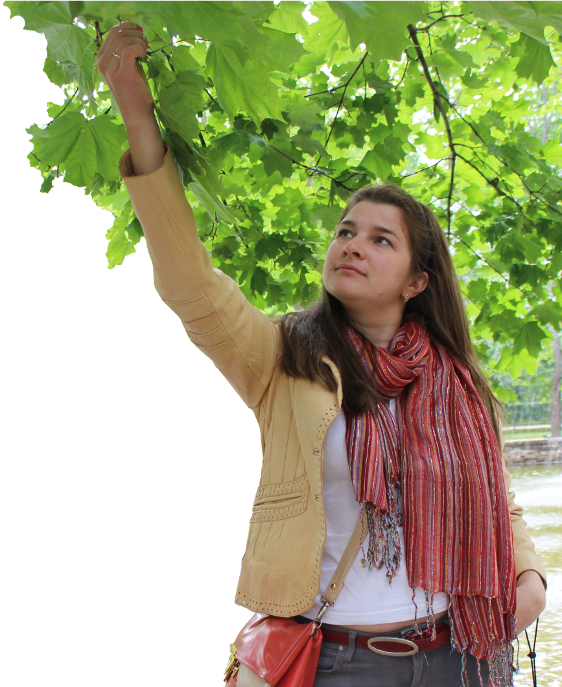

Обо мне
Привет! Меня зовут Алла.
Я — начинающий графический дизайнер.
Привела меня в дизайн моя дочь-спортсменка. Для раскрытия образа моей маленькой художественной гимнастки я стала создавать эскизы, а потом и костюмы для выступлений.
Оформляя ее страничку в Инстаграм, я поняла, что мне не хватает навыков для создания чего-то особенного. И поэтому я взяла несколько небольших курсов по графическому дизайну, а потом решила еще больше углубиться в этом направлении и получить диплом дизайнера.

Находясь долгое время в плену бухгалтерских проводок и большого количества начальников,
я искала отдушину в творчестве.
Имея аналитический склад ума, я поняла,
что дизайн — это не про «красиво нарисовать»,
а про «решить какую-либо задачу»,
чтобы было красиво)
Вот так я посеяла в своей голове мысль,
что дизайнером стать реально в любом возрасте.
Мои образования
- Дизайнерское:
- Онлайн-школа «Нетология» Курс «Графический дизайн и коммуникации»
- Онлайн-школа «Hedu» Краткий курс по графическому дизайну
- Высшее бухгалтерское:
- ГУ «БелГУТ» г.Гомель
- Высшее экономическое
- ГУ «Академия управления при президенте РБ» г.Минск
Мои навыки
Как говорят — что посеешь, то и пожнешь)
Во время учебы я освоила работу в различных дизайнерских программах.
Учитывая, что у меня есть экономическое образование, а не только творческие задатки —
я быстро разобралась, как интересно визуализировать данные, а также сделать презентации не только зрелищными, но и содержательными
Я работаю в приложениях

Мои работы


Вот так взрастила я в себе дизайнера. Это «дерево» с каждым днем становится все крепче.
Шаг за шагом я влюбляюсь в эту профессию все больше и больше. И я верю, что любовь спасет мир, а дизайн сделает мир красивее.
Буду рада нашему сотрудничеству!
Можете оставить свой номер телефона, я вам перезвоню
Нажимая кнопку «Заказать звонок», вы соглашаетесь с политикой конфиденциальности